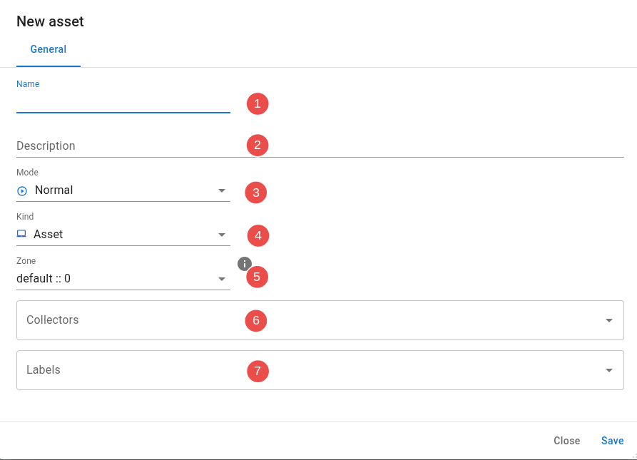

Assets
Assets are in essence the monitored objects in an InfraSonar implementation. Assets can be IT components such as routers, switches, servers etc but can easily also consists of any other device which can be monitored such as elevators  , IOT devices , etc.
, IOT devices , etc.
Add asset
When you are in the assets view you can add a new asset using the Add asset button.

Asset configuration

Configuring an asset involves the following steps:
- Enter an asset name.
We strongly suggest entering the correct hostname in FQDN format here, but do not enforce this. - Enter an optional description.
- Select the mode.
This is usually normal, see our mode documentation for more details - Select the zone. This is usually 0, see our zone documentation for more details
- Select the [collectors])(../collectors/index.md) you want to use.
- Enter the correct labels for this asset.
Advanced asset configuration and credentials
Some collectors require a more advanced configuration or credentials to be setup on the appliance running the collector. See our credentials section if this applies to your setup.
Adding multiple assets
When there is a need to add multiple assets at once we suggest using our api